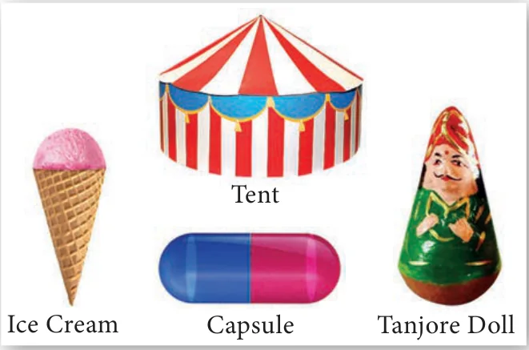
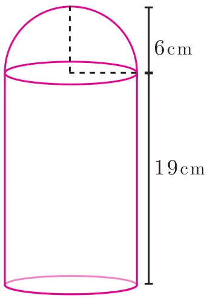
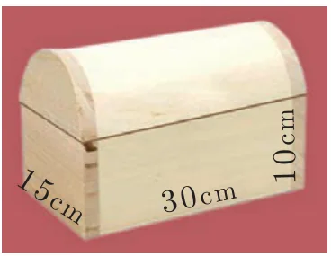
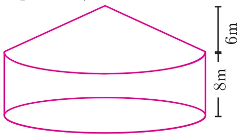
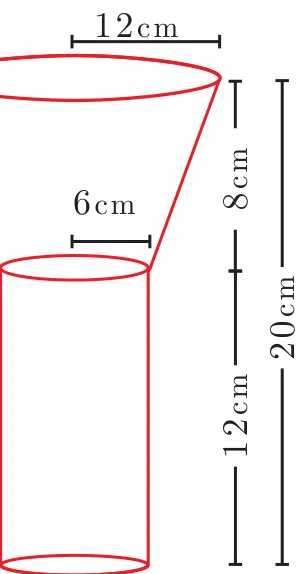
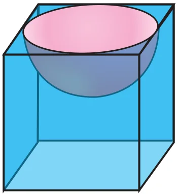
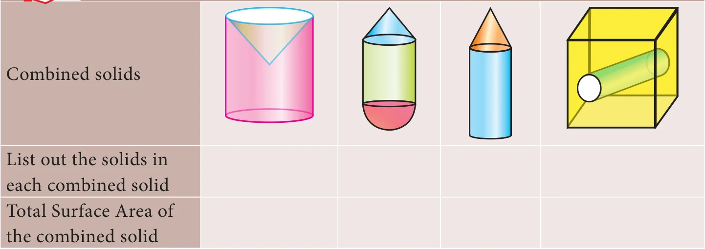

7.4 Volume and Surface Area of Combined Solids
Observe the shapes given (Fig.7.37).

The shapes provided lead to the following definitions of ‘Combined Solid’.
A combined solid is said to be a solid formed by combining two or more solids.
The concept of combined solids is useful in the fields like doll making, building construction, carpentry, etc.
To calculate the surface area of the combined solid, we should only calculate the areas that are visible to our eyes. For example, if a cone is surmounted by a hemisphere, we need to just find out the C.S.A. of the hemisphere and C.S.A. of the cone separately and add them together. Note that we are leaving the base area of both the cone and the hemisphere since both the bases are attached together and are not visible.
But, the volume of the solid formed by joining two basic solids will be the sum of the volumes of the individual solids.
Example 7.24
A toy is in the shape of a cylinder surmounted by a hemisphere. The height of the toy is 25 cm. Find the total surface area of the toy if its common diameter is 12 cm.

Solution
Let \(r\) and \(h\) be the radius and height of the cylinder respectively.
Given that, diameter \(d = 12\) cm, radius \(r = 6\) cm
Total height of the toy is 25 cm
Therefore, height of the cylindrical portion \(= 25 - 6 = 19\) cm
T.S.A. of the toy \(= \text{C.S.A. of the cylinder} + \text{C.S.A. of the hemisphere} + \text{Base Area of the cylinder}\)
\(= 2\pi rh + 2\pi r^2 + \pi r^2\)
\(= \pi r(2h + 3r)\) sq. units
\(= \frac{22}{7} \times 6 \times (38 + 18)\)
\(= \frac{22}{7} \times 6 \times 56 = 1056\)
Therefore, T.S.A. of the toy is \(1056 \text{ cm}^2\)
Example 7.25
A jewel box (Fig. 7.39) is in the shape of a cuboid of dimensions 30 cm \(\times\) 15 cm \(\times\) 10 cm surmounted by a half part of a cylinder as shown in the figure. Find the volume of the box.

Solution
Let \(l\), \(b\) and \(h_1\) be the length, breadth and height of the cuboid. Also let us take \(r\) and \(h_2\) be the radius and height of the cylinder.
Now, Volume of the box \(= \text{Volume of the cuboid} + \frac{1}{2}(\text{Volume of cylinder})\)
\(= (l \times b \times h_1) + \frac{1}{2}(\pi r^2 h_2)\) cu. units
\(= (30 \times 15 \times 10) + \frac{1}{2}\left(\frac{22}{7} \times \frac{15}{2} \times \frac{15}{2} \times 30\right)\)
\(= 4500 + 2651.79 = 7151.79\)
Therefore, Volume of the box \(= 7151.79 \text{ cm}^3\)
Example 7.26
Arul has to make arrangements for the accommodation of 150 persons for his family function. For this purpose, he plans to build a tent which is in the shape of cylinder surmounted by a cone. Each person occupies 4 sq. m of the space on ground and 40 cu. meter of air to breathe. What should be the height of the conical part of the tent if the height of cylindrical part is 8 m?

Solution
Let \(h_1\) and \(h_2\) be the height of cylinder and cone respectively.
Area for one person \(= 4\) sq. m
Total number of persons \(= 150\)
Therefore, total base area \(= 150 \times 4\)
\(\pi r^2 = 600 \qquad \ldots(1)\)
Volume of air required for 1 person \(= 40 \text{ m}^3\)
Total Volume of air required for 150 persons \(= 150 \times 40 = 6000 \text{ m}^3\)
\(\pi r^2 h_1 + \frac{1}{3}\pi r^2 h_2 = 6000\)
\(\pi r^2\left(h_1 + \frac{1}{3}h_2\right) = 6000\)
\(600\left(8 + \frac{1}{3}h_2\right) = 6000 \qquad \text{[using (1)]}\)
\(8 + \frac{1}{3}h_2 = \frac{6000}{600}\)
\(\frac{1}{3}h_2 = 10 - 8 = 2\)
\(h_2 = 6\) m
Therefore, the height of the conical tent \(h_2\) is 6 m
Example 7.27
A funnel consists of a frustum of a cone attached to a cylindrical portion 12 cm long attached at the bottom. If the total height be 20 cm, diameter of the cylindrical portion be 12 cm and the diameter of the top of the funnel be 24 cm. Find the outer surface area of the funnel.

Solution
Let \(R\), \(r\) be the top and bottom radii of the frustum.
Let \(h_1\), \(h_2\) be the heights of the frustum and cylinder respectively.
Given that, \(R = 12\) cm, \(r = 6\) cm, \(h_2 = 12\) cm
Now, \(h_1 = 20 - 12 = 8\) cm
Here, Slant height of the frustum \(l = \sqrt{(R - r)^2 + h_1^2}\) units
\(= \sqrt{36 + 64}\)
\(l = 10\) cm
Outer surface area \(= 2\pi rh_2 + \pi(R + r)l\) sq. units
\(= \pi[2rh_2 + (R + r)l]\)
\(= \pi[(2 \times 6 \times 12) + (18 \times 10)]\)
\(= \pi[144 + 180]\)
\(= \frac{22}{7} \times 324 = 1018.28\)
Therefore, outer surface area of the funnel is \(1018.28 \text{ cm}^2\)
Example 7.28
A hemispherical section is cut out from one face of a cubical block (Fig.7.42) such that the diameter \(l\) of the hemisphere is equal to side length of the cube. Determine the surface area of the remaining solid.

Solution
Let \(r\) be the radius of the hemisphere.
Given that, diameter of the hemisphere \(=\) side of the cube \(= l\)
Radius of the hemisphere \(= \frac{l}{2}\)
TSA of the remaining solid \(= \text{Surface area of the cubical part} + \text{C.S.A. of the hemispherical part} - \text{Area of the base of the hemispherical part}\)
\(= 6 \times (Edge)^2 + 2\pi r^2 - \pi r^2\)
\(= 6 \times (Edge)^2 + \pi r^2\)
\(= 6 \times (l)^2 + \pi\left(\frac{l}{2}\right)^2 = \frac{1}{4}(24 + \pi)l^2\)
Total surface area of the remaining solid \(= \frac{1}{4}(24 + \pi)l^2\) sq. units
Activity 4
